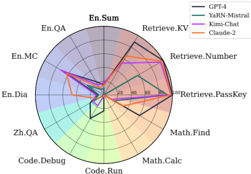
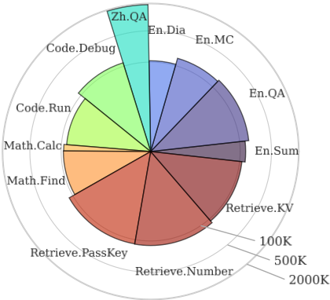
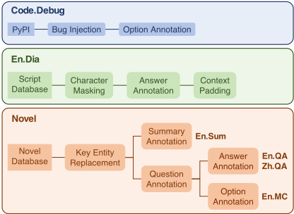
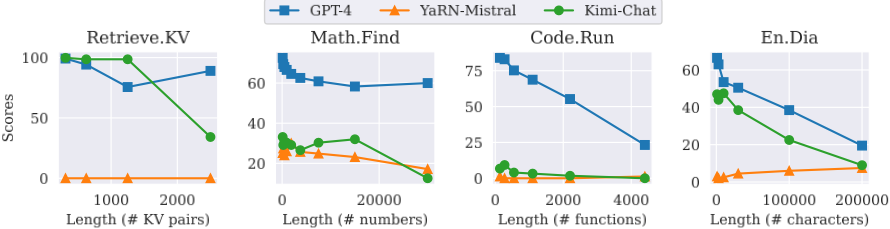
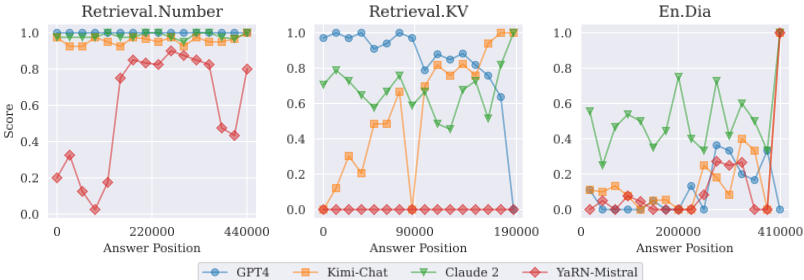
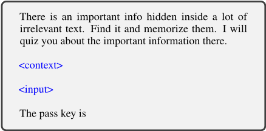

∞BENCH：将长上下文评测扩展至 100K token 以上
论文指出现有长上下文评测基准平均长度仅约 10K token，无法评估宣称支持 100K+ 甚至 200K 上下文的 LLM 的真实能力，因此提出首个平均长度超过 100K token（约 200K）的基准 ∞BENCH。该基准覆盖检索、代码、数学、小说、对话 5 个域共 12 个任务、3946 个样例，包含中英双语与合成/真实两类任务，任务设计要求理解长程依赖，仅靠检索少量片段无法完成。对 GPT-4、Claude 2、Kimi-Chat、YaRN-Mistral 的评测显示，现有长上下文模型在 100K+ 场景下性能显著退化：GPT-4 在检索、代码、数学域领先，开源 YaRN-Mistral 多个任务接近随机。分析还发现性能随输入变长普遍下降、'lost in the middle' 现象在 100K+ 规模下不稳健，并提出 context recalling 提示技巧，使 GPT-4 在 Code.Debug 上准确率从 15.74% 提升至 39.59%。对团队而言，它既是评估长上下文模型选型的现成基准，其任务设计与提示发现也可直接借鉴到内部 RAG/长文档管线的评测与提示优化中。
现有公开长上下文评测基准的上下文平均长度多在 10K token 左右、普遍低于 100K，跟不上宣称支持 100K+ 上下文的 LLM 的快速发展，缺乏标准化基准来评估和比较模型处理超长上下文的真实能力，阻碍了模型间的对比分析与改进方向的定位。
构建 ∞BENCH：包含 12 个任务、5 个域（检索、代码、数学、小说、对话），中英双语，共 3946 个样例，平均长度约 200K token。任务分两类：真实场景任务（小说摘要/QA/多选、剧本角色识别 En.Dia、基于 PyPI 仓库的 Code.Debug）与可自动生成的合成任务（Retrieve.PassKey/Number/KV、Code.Run、Math.Find/Calc）。人工标注采用 5 条标注流水线并迭代质检；小说任务采用 key entity replacement 构造'假小说'以规避训练数据污染；任务设计强调长程依赖理解，使简单检索少量片段不足以作答。基于该基准评测 GPT-4、Claude 2、Kimi-Chat、YaRN-Mistral 四个模型，并进行长度消融、答案位置（lost in the middle）分析与 context recalling 提示技巧实验。
∞BENCH 共 3946 个样例，平均长度超过 100K token（约 200K），含 12 个任务、5 个域
GPT-4 在检索、代码、数学域显著优于其他基线且平均分最高；小说类任务中各专有模型间无明显赢家
开源 YaRN-Mistral 在多数任务落后于专有模型，多个领域接近随机表现
长度消融：模型性能随输入长度增加普遍下降，说明模型虽技术上支持长输入但有效性显著降低
lost in the middle：在 100K+ 场景下未观察到性能与答案位置的一致性趋势，与 Liu et al. (2023) 在 16K 内的观察不同
context recalling 提示使 GPT-4 在 Code.Debug 上准确率从 15.74% 提升至 39.59%
RWKV-4-World-7B 因训练长度不足（仅 4K），在 Retrieve.PassKey 上输出不可理解文本、得分为 0
评测成本：GPT-4 全量评测约 5000 美元；Claude 2 需 3 名作者数周人工网页输入及约 160 美元会员费；YaRN-Mistral 单样例约 10 分钟（A100 80GB）
首个平均数据长度超过 100K token 的 LLM 长上下文基准。相比 L-Eval、LongBench、LooGLE、LRA 等平均约 10K token 的已有基准，上下文长度提升约一个数量级，且任务域更广（小说、代码、数学、对话、检索，中英双语，合成与真实任务结合）；任务设计强调长程依赖，使'检索少量片段'式解法失效；采用 key entity replacement 构造'假小说'规避数据污染；并首次在 100K+ 规模上检验 lost in the middle 现象、提出 context recalling 提示技巧。
相关度级别：high
命中能力域：3.1 上下文工程与记忆 | 3.2 提示工程 | 3.5 评测与可靠使用
理由：论文直接命中 3.5（LLM 应用评测基准与方法）与 3.1（长上下文策略/上下文窗口管理）：团队的知识库问答、代码仓库级生成与审查等场景都依赖长上下文能力，而论文揭示'模型宣称支持 128K/200K'与'实际可用上下文'之间存在显著差距，这正是团队做模型选型与上下文组织策略时必须量化的核心问题。论文的长度消融方法可用于确定团队场景下各模型的有效上下文长度，进而指导分块/压缩/RAG 策略；context recalling 是可直接复用的提示技巧（3.2）；Code.Debug、长文档 QA、Retrieve.KV 等任务设计可借鉴为团队内部长上下文评测集的构建范式，key entity replacement 思路可用于构建防污染的内部评测数据。
建议动作：深入精读并做内部分享
arXiv:2402.13718v3 [cs.CL] 2024年2月24日
清华大学计算机科学与技术系，北京，中国 zxr19@mails.tsinghua.edu.cn
对长上下文进行处理与推理，对于大语言模型（LLM）的许多实际应用至关重要，例如文档理解和 Agent 构建。尽管近期在使 LLM 能够处理超过 100K token 的上下文方面取得了长足进展，但目前仍缺乏一个标准化的基准测试（benchmark）来评估这种长上下文能力。现有的公开基准测试通常只关注 10K token 左右的上下文，限制了对 LLM 处理更长上下文能力的评估与比较。在本文中，我们提出了 ∞ BENCH，这是首个平均数据长度超过 100K token 的 LLM 基准测试。∞ BENCH 包含横跨多个领域的合成任务与真实任务，并以英文和中文两种语言呈现。∞ BENCH 中的任务被设计为需要充分理解上下文中的长距离依赖，使得仅仅从上下文中检索有限数量的段落并不足以完成这些任务。在实验中，我们基于 ∞ BENCH 评估了专为处理长上下文而定制的最先进的专有与开源 LLM。结果表明，现有的长上下文 LLM 仍需取得重大进展，才能有效处理 100K+ 的上下文。我们进一步给出了关于 LLM 处理长上下文行为的三项有趣分析。我们的代码和数据已发布 12 。
近年来，大语言模型（LLM）（Brown et al., 2020; OpenAI, 2023a; Touvron et al., 2023）在一系列自然语言处理（NLP）任务（Qiu et al., 2020; Han et al., 2021）中展现出了卓越的性能。LLM 正在展现出通往通才型任务辅助的有前景方向，能够通过对话式交互协助用户完成实际任务。这些任务包括网页导航（Nakano et al., 2021）、代码仓库分析（Chen et al., 2021）以及从文档中提取有用信息（Koˇ cisk` y et al., 2018），标志着向通用人工智能迈出了一步。对于这些基于 LLM 的场景而言，除了理解细粒度语义和具备广博知识之外，处理长上下文的能力也日益关键（Dong et al., 2023; Huang et al., 2023）。文本文档、历史对话、复杂指令以及繁琐的工作流程构成了日常任务中最直接处理的数据，必须作为长上下文输入 LLM 才能得到有效处理。
1 https://github.com/OpenBMB/InfiniteBench
2 https://huggingface.co/datasets/xinrongzhang 2022/InfiniteBench

尽管重要性日益凸显，LLM 在处理长上下文方面始终面临挑战，其主要原因在于长序列训练所需的大量计算资源（Dao et al., 2022; Dao, 2023），以及明显无法泛化到比训练中所遇到的序列更长的序列（Chen et al., 2023a; Peng et al., 2023b）。LLM 通常在不超过 8K token 的序列上进行训练（Touvron et al., 2023; Penedo et al., 2023; Biderman et al., 2023），因此无法很好地处理超过 8K token 的上下文。这些限制在很大程度上阻碍了大多数 LLM 被应用于更复杂的任务。
| Benchmark | Avg Len | En | Zh | Code | Math | Novel | Dialogue | Synthetic |
|---|---|---|---|---|---|---|---|---|
| LRA (Tay et al., 2020) LongBench (Bai et al., | ∼ 10K | ✓ | ✗ | ✗ | ✓ | ✗ | ✗ | ✓ |
| 2023) | ∼ 10K | ✓ | ✓ | ✓ | ✗ | ✓ | ✓ | ✓ |
| L-Eval (An et al., 2023) | 4K - 60K | ✓ | ✗ | ✓ | ✓ | ✗ | ✗ | ✓ |
| LooGLE (Li et al., 2023) | ∼ 20K | ✓ | ✗ | ✗ | ✗ | ✗ | ✓ | ✗ |
| ∞ BENCH (ours) | ∼ 200K | ✓ | ✓ | ✓ | ✓ | ✓ | ✓ | ✓ |
| Benchmark | Avg Len | En | Zh | Code | Math | Novel | Dialogue | Synthetic |
训练基础设施的最新进展（Shoeybi et al., 2019; Narayanan et al., 2021; Dao et al., 2022; Dao, 2023）以及改进长度泛化能力的努力（Anil et al., 2022; Chen et al., 2023b; Peng et al., 2023b）3，推动了长上下文 LLM 的快速发展。基于这些改进的训练基础设施和长度泛化方法，据称若干 LLM 已经能够处理超过 100K token 的数据（Peng et al., 2023b; OpenAI, 2023b; 01.AI, 2023b,a），其中 Claude 2（Anthropic, 2023）和 Kimi-Chat（AI, 2023）甚至声称能够处理多达 200K token。然而，长上下文 LLM 的迅速涌现已超出了充分的评估基准测试（benchmark）的发展步伐。现有的长上下文 benchmark 所采用的上下文平均长度大多在 10K token 左右（Bai et al., 2023; Tay et al., 2020），无一例外地低于 100K token。长上下文评估方法发展的这种滞后，既阻碍了对各种长上下文 LLM 的对比分析，也阻碍了对长上下文处理潜在改进方向的精准定位。
在本工作中，我们提出了 ∞ BENCH，这是首个平均数据长度超过 100K token 的综合性基准测试（benchmark）。∞ BENCH 包含不同领域（小说、代码、数学等）和不同语言（英语和中文）的任务。为了全面评估长上下文 LLM 的性能，∞ BENCH 除了一组真实任务之外，还集成了可自动生成以适用于更长上下文的合成任务（例如，在数组中查找 topk 数）。
为了构建由人工标注的任务，我们开发了 5 条标注流水线，用于进行细致的样例标注。这些流水线经过迭代改进，直至样例达到质量标准。相反，自动生成的任务则可以轻松扩展到各种长度。在完成 ∞ BENCH 之后，我们在该 benchmark 上评估了多个最先进（state-of-the-art, SOTA）长上下文 LLM 的性能，以衡量该 benchmark 的难度并评估这些模型的有效性。结果表明，当前的 SOTA LLM 尚不能完全胜任处理 ∞ BENCH 中的所有任务，这凸显了让 LLM 有效处理长上下文仍是一项持续的挑战。我们还针对 LLM 在此类长上下文上的行为开展了一些有趣的分析，包括任务长度消融实验、“迷失在中间”（lost in the middle）现象（Liu et al., 2023）的缺失，以及上下文回忆提示技术。
3 https://www.reddit.com/r/LocalLLaMA/comments/14lz7j5/ntkaware_scaled_rope_allows_llama_models_to_have/
我们的贡献可以总结如下：
扩展上下文长度 由于自注意力的二次复杂度，Transformer 通常在不超过 8K token 的文本序列上进行训练，因而在更长的下游任务中面临挑战。为应对这一问题，目前出现了两种主要策略：其一是开发能够处理更长文本序列的位置编码（Sun et al., 2022; Press et al., 2021）；其二是对推理阶段技术加以改进，以便在训练后扩展现有的大语言模型（LLM）。主要做法是修改旋转位置编码（Su et al., 2023），并实施训练后调整，以更好地应对较长序列中相对位置距离增大所带来的问题（Zhu et al., 2023; Peng et al., 2023b; Chen et al., 2023a）。
100K+ LLM 最近，许多 LLM 已展现出处理超过 100K token 的能力。一些流行的专有 100K+ LLM 包括 GPT-4、Claude 2（Anthropic, 2023）和 Kimi-Chat（AI, 2023）。另一方面，开源的 100K+ 模型则要少得多。一些值得关注的模型包括 YaRN（Peng et al., 2023b）和 Yi200K（01.AI, 2023a,b）。在本文中，我们在 ∞ BENCH 上对 GPT-4、Claude 2、Kimi-Chat 以及 YaRNMistral-7B-128K 4 进行了基准测试（benchmark），它们是一些最新的、最强大的、声称能够处理超过 100K token 的 LLM。
推理基础设施 大量研究致力于加速自注意力计算。这些研究主要集中在通过改进 IO 管理（Dao et al., 2022; Dao, 2023）、内存优化（Kwon et al., 2023; Shazeer, 2019; Ainslie et al., 2023）以及增强解码阶段的并行化（Dao et al., 2023; Hong et al., 2023）来改进注意力机制。诸如滑动窗口注意力（Sliding Window Attention）（Beltagy et al., 2020）、LM-Infinite（Han et al., 2023）和 StreamingLLM（Xiao et al., 2023）等方法引入了注意力变体，能够在不带来过高计算或内存开销的情况下处理无限长的序列。然而，这些技术在维持历史信息方面常常面临挑战。
长上下文基准测试（Long Context Benchmarks） 目前已有若干用于评估长上下文 AI 模型的基准测试，其显著特点是上下文长度约为 10K token。L-Eval (An et al., 2023) 与 LongBench (Bai et al., 2023) 是其中的代表性工作，它们将既有任务 (Kociský et al., 2017; Dasigi et al., 2021; Yang et al., 2018; Huang et al., 2021; Joshi et al., 2017) 聚合为综合性基准测试。LongBench 涵盖问答（QA）、摘要、合成检索和代码四个类别，共包含 21 个任务，其中 4 个为新提出的任务。相比之下，L-Eval 则包含横跨问答、摘要、数学、检索和多项选择（MC）领域的 18 个任务，并引入了 3 个新任务。另一个值得关注的基准测试 LooGLE (Li et al., 2023) 区分短依赖与长依赖样例，聚焦于摘要和问答任务；其摘要语料库与我们的有所不同，采用的是学术论文而非小说。Long-Range Arena (LRA) (Tay et al., 2020) 则进一步丰富了任务类型，包含文本、图像和数学领域的六个任务，专为可扩展性而设计。相比之下，∞ BENCH 的突出之处在于其上下文长度显著更长，且任务领域范围更广。表 1 对这些长上下文基准测试进行了详细比较。
4 https://huggingface.co/NousResearch/Yarn-Mis tral-7b-128k ，我们将该模型记为 YaRN-Mistral。

| Task | Annotation | # Ex. | Avg Len |
|---|---|---|---|
| Ret.PassKey | Auto | 590 | 122.4K/2 |
| Ret.Number | Auto | 590 | 122.4K/4 |
| Ret.KV | Auto | 500 | 121.1K/22.7 |
| En.Sum | Human | 103 | 103.5K/1.1K |
| En.QA | Human | 351 | 192.6k/4.8 |
| En.MC | Human | 229 | 184.4K/5.3 |
| Zh.QA | Human | 189 | 2068.6K/6.3 |
| En.Dia | Auto | 200 | 103.6K/3.4 |
| Code.Debug | Human | 394 | 114.7K/4.8 |
| Code.Run | Auto | 400 | 75.2K/1.3 |
| Math.Calc | Auto | 50 | 43.9K/43.9K |
| Math.Find | Auto | 350 | 87.9K/1.3 |
| Task | Annotation | # Ex. | Avg Len |
| Task | GPT-4 | YaRN-Mistral | Kimi-Chat | Claude 2 |
|---|---|---|---|---|
| Retrieve.PassKey | 100 | 92.71 | 98.14 | 97.8 |
| Retrieve.Number | 100 | 56.61 | 95.42 | 98.14 |
| Retrieve.KV | 89 | 0 | 53.6 | 65.4 |
| En.Sum | 14.73 | 9.09 | 17.93 | 14.45 |
| En.QA | 22.22 | 9.55 | 16.52 | 11.97 |
| En.MC | 67.25 | 27.95 | 72.49 | 62.88 |
| En.Dia | 8.5 | 7.5 | 11.5 | 46.5 |
| Zh.QA | 23.06 | 16.98 | 18.62 | 10.53 |
| Code.Debug | 39.59 | 0.76 | 18.02 | 2.28 |
| Code.Run | 23.25 | 1.25 | 2 | 2.5 |
| Math.Calc | 0.01 | 0 | 0 | 0 |
| Math.Find | 60 | 17.14 | 12.57 | 32.29 |
| Average | 45.63 | 19.96 | 34.73 | 37.06 |
| Task | GPT-4 | YaRN-Mistral | Kimi-Chat | Claude 2 |
∞ BENCH encompasses 12 tasks spanning 5 domains: retrieval, code, math, novels, and dialogue. Two of these tasks are derived from existing literature(Mohtashami and Jaggi, 2023; Liu et al., 2023). Among the newly introduced tasks, half are generated automatically, while the remainder are annotated by humans.
In total, ∞ BENCH includes 3946 examples, featuring a length beyond 100K tokens (average approximately 200K). Figure 2 illustrates the distribution of these tasks. Table 2 details their respective input and output lengths as well as the number of examples per task.
Next, we illustrate each task in detail. The tasks can be grouped into two broad categories. The first involves realistic context collected from real-world scenarios which has potential practical usage of long context LLMs. The second depends on synthetic contexts which are created or collected for testing certain capabilities of long-context LLMs.
我们开发了基于小说的任务，如图 3 所示，所用小说来源于网站5 6，并经过人工筛选。更多标注信息见附录 C。
在这些任务中，模型需要对推理阶段所提供的整部小说进行推理。考虑到许多小说及其电影改编作品和相关讨论都可以在线获取，并且可能在大语言模型（LLM）训练期间已被接触过，我们采用关键实体替换作为应对措施。这涉及将标注者所确定的重要实体（例如主角姓名）替换为无关实体，从而创建“虚假小说”。
5 https://www.sparknotes.com/
6 https://www.cliffsnotes.com/

利用这些修改后的小说，我们设计了三种形式的任务：摘要、开放式问答（QA）和多项选择（MC）题，并对标注同样应用关键实体替换。所有英文任务共享同一组修改后的小说。
En.Sum En.Sum 任务要求模型生成小说的简洁摘要。
金标准标签来源于网络，并经过人工筛选以去除非摘要内容（如评论）。模型性能使用 ROUGE-L-Sum 指标（Lin, 2004）进行评估。
En.QA & Zh.QA 我们对 En.QA 和 Zh.QA 任务采用相同的标注流程，确保这些问题需要长程依赖和推理，而不仅仅是简单的短文检索。这些任务主要分为两类推理：
这些任务测试 LLM 在小说中定位并处理信息，通过聚合或过滤进行推理以得出答案。
En.MC En.MC 任务的标注方式与 En.QA 类似，不同之处在于模型会看到四个答案选项。标注者被要求设计这些选项使其具有挑战性。
En.Dia En.Dia 任务的构建过程如图 3 所示。我们从指定的在线数据库 7 中收集电影和电视剧剧本，重点关注由长篇、多角色对话构成的语料。仅保留英文剧本，并进行必要的清洗。
在 En.Dia 任务中，剧本中随机出现的角色名称实例被替换为 $$MASK$$，目标是正确识别这些被遮蔽的名称。对于长度不足 100K token 的剧本，我们通过填充额外的剧本来对其进行扩充。
Code.Debug 我们按照图 3 所示的流程开发该任务。代码仓库来源于 PyPI 8，经过筛选处理，超出 64K 至 256K token 范围的仓库被排除（通过 tiktoken 分词器（OpenAI, 2023c）进行分词）。每个仓库被转换为单个文件，聚合其中所有文件的内容，每个文件前都冠以其相对于根目录的路径。随后，三位作者在每个仓库的一个函数中插入一个刻意且明显的错误。选项以 Class.Function 的格式呈现。我们采用六种缺陷注入方法：(1) 删除必要的变量声明；(2) 在函数调用中使用不正确数量的参数；(3) 制造无限循环；(4) 造成缩进错误；(5) 将引用替换为未定义的变量/函数名；(6) 引入明显的语法错误（例如，未闭合的括号）。
7 https://imsdb.com/
8 https://pypi.org/
初步结果表明，该任务对当前的 LLM 而言过于困难（所有基线模型都无法识别最明显的错误，例如未闭合的括号）。为了缓解这一问题，我们提供四个答案选项，其中一个包含注入的缺陷，其余则不含缺陷。请注意，这使得许多示例可以通过外部检索预处理轻松解决。然而，我们鼓励用户不要使用外部检索预处理，以保持评估的公平性。我们期待 LLM 能够在没有选项的情况下直接解决问题的阶段到来。
第二类任务以合成上下文为特征。这些任务没有直接的现实应用或使用场景，其设计目的在于评估模型处理长上下文的能力。我们界定了有效进行长上下文处理所需的四项基本能力：
在检索任务中，模型需要从以无关内容为主的长上下文中检索特定的字符序列。这类测试可适用于任意上下文长度，能够评估信息放置位置对模型性能的影响，例如“迷失在中间”（lost-in-the-middle）现象（Liu et al., 2023）。
∞ BENCH 中的三个检索任务在复杂度上各不相同。
Retrieve.PassKey 该任务由 Mohtashami and Jaggi (2023) 首次提出。模型被提示查找一个特定的 <key>，称为 pass key，它是一个随机的 5 位数字序列。如下所示，pass key 被插入到一段冗长且充满噪声的上下文中。在 ∞ BENCH 中，我们生成的样本包含 59 个不同的 pass key 位置，这些位置在上下文中均匀分布。在每个位置，我们构建 10 个使用不同 pass key 的样本。这样共得到 590 个样本。
有一个重要的 pass key 藏在大量
pass key 是 <key>。记住它。pass key 是
无关文本之中。找到它。<very long noisy context> <key> <very long noisy context>
pass key 是什么？
Retrieve.Number 为了考察大语言模型（LLMs）的局部注意力，我们提升了 Retrieve.PassKey 的复杂度，将答案长度增加到 10 位数字，并加入了连续重复的数字。例如，Retrieve.PassKey 中的 <key> 取值为 98762，而在 Retrieve.Number 中则为 9998877762。这一改动旨在评估长上下文模型的局部分辨能力，因为我们的初步实验表明，LLMs 难以辨别重复的数字。
Retrieve.KV Liu et al. (2023) 提出了一个键值检索任务，该任务在一个包含大量键值对的大型 JSON 对象中进行（例如，30eea139-b6dd-43fc-bc5d-0d3d17980229 → bfd36c2b-c57e-41ef-9cc1-b21b4e60e664）。
该任务要求模型准确识别并检索出与指定键相对应的值。由于相关信息与无关信息在格式上难以区分，该任务的复杂度进一步增加。
Code.Run 在本任务中，我们评估大语言模型（LLMs）模拟涉及基本算术运算的多步函数执行的能力。尽管该任务使用 Python 解释器即可轻松求解，但此处的重点在于此类任务所需的长期状态跟踪。状态跟踪能力已在 GPT-4 中得到展示（Bubeck et al., 2023）。具体而言，该任务涉及创建由多个简单函数组成的 Python 代码，其中包含加法、减法和嵌套函数调用等运算。这些任务的结构设计如下：
def func_0(x): return func_1(x) + 4 def func_1(x): return x - 1
某些函数的返回值依赖于其他函数（例如，func_0 调用 func_1）。我们将深度（depth）定义为单次调用所引发的级联函数调用的数量。因此，func_0 内对 func_1 的调用的深度为 1。在 Code.Run 中，我们采用的深度范围为 2 到 10，并确保每个函数最多调用一个其他函数。为了保持每一步计算的简单性，这些函数被限制为仅执行加法和减法。
Math.Find：Math.Find 评估模型在大型数组中识别特定元素的能力，这需要通过全面观察才能保证准确性。该任务还测试了模型在编码上下文时保持状态的能力。具体而言，模型会收到一个很长的数字列表，并被要求找出七个关键数字之一：三个最大的数（第1、第2和第3大）、三个最小的数（第1、第2和第3小）以及中位数。
Math.Calc：为了评估顺序处理能力，Math.Calc 提示模型计算一个包含加法和减法的冗长算术表达式的结果。初步实验表明，当前的大语言模型（LLM）难以直接给出最终答案。因此，我们改为查询 LLM，要求其给出每个运算符之后的中间结果。模型性能根据第一个错误出现之前正确值的数量来评估。
我们在 ∞ BENCH 上进行了一整套全面的实验。本节将介绍基线方法、实验设置和主要结果。
∞ BENCH 通常要求模型具备处理超过 100k 输入上下文的能力。目前只有少数大语言模型（LLM）声称能够处理超过 100k 的上下文。我们纳入了四个基线。前三个是专有 LLM，因为我们无法获取模型本身，而最后一个基线则是开源的。评估的详细信息见附录 D。
GPT-4 OpenAI 的 GPT 是市场上使用最广泛、能力最强的 LLM 之一，其较新版本的 GPT-4 (OpenAI, 2023b) 可支持 128K 上下文。
Claude 2 Claude 2 (Anthropic, 2023) 是由 Anthropic AI 发布的专有对话式 LLM，已展现出令人印象深刻的能力。Claude 系列的第二个版本支持 200K 上下文。由于无法访问其 API，我们通过网页手动输入每个样例。
Kimi-Chat Kimi-Chat 是由 Moonshot AI (AI, 2023) 开发的面向对话的专有 LLM，设计用于处理最多 200K 的上下文。由于缺乏 API 访问权限，我们通过其网页界面手动输入测试数据。
YaRN-Mistral YaRN-Mistral 是 Peng et al. (2023b) 推出的 Mistral-7B (Jiang et al., 2023) 衍生版本。原始的 Mistral-7B 在最长 8K 的输入长度上进行训练，在更长的上下文中性能有所下降。Peng et al. (2023b) 通过修改位置编码并进行继续训练，将其适配至 128K 上下文。
提示模板 对于每个模型-任务组合，我们精心设计提示，以在简短的虚拟示例上优化模型性能。各模型和任务的详细提示模板可在附录 B 中找到。
输入截断 所有基于应用程序接口（API）的基线模型均受最大输入长度限制，会拒绝超过该阈值的输入。尽管 YaRN-Mistral 在理论上能够处理更长的上下文，但其作者仅声称具备最高 128K 的能力。因此，输入通过移除中间部分并将两端拼接的方式进行截断。这一做法基于如下假设：指令和书名等关键信息通常位于提示的开头或结尾。
表 3 和图 1 展示了各基线模型在 ∞ BENCH 上的性能表现。值得注意的是，GPT-4 在检索、代码和数学领域优于其他基线模型，平均得分明显更高。然而，在基于小说的任务中，各专有 LLM 之间并未出现明显的优胜者。另一方面，开源的 YaRN-Mistral 在大多数任务中落后于专有模型，在多个领域表现出近乎随机的性能。这与它在较短上下文中相比这些模型相对较差的表现相一致。此外，可以观察到基线模型在检索任务中的表现普遍优于其他领域，这也印证了这些任务对人类参与者而言相对简单。
随后，我们对结果进行了详细分析，识别并强调了几种值得注意且有趣的现象。
与我们基准测试旨在评估处理长上下文能力的目标相一致，我们使用缩短上下文的版本来验证基线模型的能力。我们对自动生成任务的一个子集进行了相应修改，性能结果如图 4 所示。可以观察到，与较短输入相比，模型性能在较长输入长度下普遍下降。这表明，尽管这些基线模型在技术上具备处理长输入的能力，但在此类条件下的有效性会显著降低。
Prior research indicates a performance decline in some LLMs when answers are positioned around the center of the context (Liu et al., 2023). However, our findings do not strongly corroborate this. As depicted in Figure 5, we analyze model performance based on answer location in three locationdependent tasks. We observe no consistent trend between performance and answer position across different models . For instance, GPT-4 shows a preference for early answers in Retrieval.KV but favors later ones in En.Dia. In contrast, Claude 2's performance remains relatively unaffected by answer position on all three tasks, whereas YaRN-Mistral and Kimi-Chat excel with end-positioned answers (except that YaRN-Mistral get zero performance on all positions on Retrieval.KV).
One plausible reason why we have different observations from Liu et al. (2023) is that they experiment with different models using at most 16K


请逐步思考，最后针对含有故意错误的函数给出你的答案。<list of options>
在选项中定位这些函数，复述其内容，通过代码进行检查，最后针对含有故意错误的函数给出你的答案。<list of options>
长度上下文，这大约比我们的设置短 8 倍。他们研究中所用的模型也与我们的不同。最后，任务也不同：他们的实验涉及文档问答（而且他们使用 Retrieval.KV 的结果可以说同样没有表现出非常明显的性能下降）。我们假设“迷失在中间”（Lost in the middle）现象仅在特定任务和模型上才会出现。对这些差异的更深入探究超出了本文的范围。
我们发现了一种针对长上下文任务的有趣提示技术，称为上下文回忆（context recalling）。该技术的核心观点是：尽管相关信息已经存在于上下文中，并且可以通过直接注意力获取，但先提示模型在其生成过程中回忆出相关信息，再进行进一步的推理，可能会更加有效。在我们使用 Code.Debug 进行的实验中，当我们仅仅指示 GPT-4 逐步处理信息时，准确率为 15.74%。然而，通过明确地引导 GPT-4 在分析之前先复述相关代码，其在 Code.Debug 上的准确率显著提升至 39.59%。这种上下文回忆的方法值得进一步研究。
我们提出了 ∞ BENCH，这是首个专为平均长度超过 100K 的长上下文量身定制的基准测试。实证证据表明，尽管当前的大语言模型（LLM）声称能够熟练处理如此长的上下文，但在实际处理时其性能出现了显著下降。这一发现凸显了开发更先进方法以提升 LLM 处理长上下文效率的必要性。此外，我们的分析为理解 LLM 在长上下文任务中的行为提供了洞见，可为未来研究提供指导。
尽管我们的基准测试（benchmark）为理解 LLM 的性能提供了有价值的洞见，但它可能不够多样化或不够全面，难以对模型能力做出全面的评估，这一局限是大多数基准测试所共有的。此外，评分依赖于精确匹配（exact match），而精确匹配又取决于提示模板和答案解析方法，因此在评估新模型时可能需要针对性地重新设计。
另外，支持最长 100K token 的上下文，对于需要分析大规模数据集（例如多本书籍或完整数据库）的应用而言可能仍显不足。探索 LLM 处理多达一百万 token 甚至更多 token 的能力，是一个颇具前景的研究方向。在实际应用中，通过微调（finetuning）让模型记住上下文，而不是在推理过程中处理上下文，或许能提供一种更高效的替代方案，尽管这会带来相当可观的计算需求。
我们的人类标注者被要求排除可能引发敏感伦理问题的数据，例如冒犯性语言或社会偏见。尽管如此，遇到敏感内容的可能性依然存在，尤其是当所采集的书籍或代码中包含此类内容时。这一担忧在某种程度上得到了缓解，因为该基准测试的主要关注点在于评估 LLM 的长上下文能力，而非影响其社会偏见。
本研究的目标是推动 LLM 在处理长上下文方面的能力发展。通过在用户交互之前纳入详细的规范说明，这可能有助于实施更有效的“护栏”以防止滥用。然而，这种方法也可能增加新型提示注入攻击的风险。
RWKV（Peng et al., 2023a）是一种结合了 Transformer 架构（Vaswani et al., 2017）与循环神经网络（Hochreiter and Schmidhuber, 1997）两者优势的架构。其训练过程可以并行化，而推理过程则是循环式的，从而使推理阶段的复杂度为 O(1)。因此，其内存占用不会随上下文长度而增长，使其能够支持任意长度的输入。我们使用该模型系列中的 RKWV4-World-7B 版本。不过，我们需要注意，该模型并未在此长度的输入上进行过训练。
表 4 展示了 RWKV-4World-7 与我们基线模型的性能对比。我们发现，RWKV-4-World-7B 在我们的基准测试上输出难以理解的文本，导致它在 Retrieve.PassKey 上性能为零，而该任务是其他基线模型最容易完成的任务。这很可能是因为该模型未在此长度的输入上进行过训练，存在训练-测试域偏移问题。9 因此，我们不再考虑在我们的基准测试中的其他任务上对其进行测试。
| Model | Retrieve.PassKey Acc. |
|---|---|
| GPT-4 Turbo | 100% |
| YaRN-Mistral | 92.71% |
| Kimi-Chat | 98.14% |
| Claude 2 | 97.80% |
| RWKV-4-World-7B | 0.00% |
| Model | Retrieve.PassKey Acc. |
在下面的模板中，许多任务都包含一个 <input> 部分，该部分会在每个示例中提供。通常，它们是一段简短的、类似问题的文本，用于告诉模型应当完成什么任务。其中一个例子是 "What is the pass key?"。
在大量无关文本中隐藏着一条重要信息。请找到并记住它们。我会就其中的重要信息向你提问。

提取与指定键（key）对应的值
在下面的 JSON 对象中。<context> <input>
摘要：
阅读下面的书籍并回答一个问题。
请务必非常简洁。
阅读下面的书籍并回答一个问题。回答请务必非常简洁。<context> 问题：<question> 答案：
阅读下面的书籍并回答一个问题。
以下选项中只有一个正确，请用一个字母（A、B、C 或 D）告诉我答案。不要说任何其他内容。
以下选项中只有一个正确，请用一个字母（A、B、C 或
阅读下面的书籍并回答一个问题。 <context> 问题： <question> D）。不要说任何其他内容。 A. <OPTION_A> B. <OPTION_B> C. <OPTION_C> D. <OPTION_D> 正确选项是：
在这个大型项目中，有且仅有一个函数被刻意设置成包含一个明显的错误。请找出包含最明显错误的那个函数。我会给你四个选项来缩小范围。你可以逐一检查这些选项并进行思考。最终，用一个单独的字母（A、B、C 或 D）告诉我答案。
D. <OPTION_D>
你应该先找到选项中的函数。复述它们的内容，通过代码进行检查，最后告诉我你的答案，即 A、B、C 或 D 中哪个函数存在刻意设置的明显错误。
在这个大型项目中，有且仅有一个函数被刻意设置成包含一个明显的错误。请找出包含最明显错误的那个函数。我会给你四个选项来缩小范围。你可以逐一检查这些选项并进行思考。最终，用一个单独的字母（A、B、C 或 D）告诉我答案。
你应该先找到选项中的函数。复述它们的内容，通过代码进行检查，最后告诉我你的答案，即 A、B、C 或 D 中哪个函数存在刻意设置的明显错误。
正确选项是：
以下是一组 Python 函数。其中有一个名为 func_1 的函数。
请给出 func_1(3) 返回值的准确数值。请简洁作答。你的回答必须以最终返回值结尾。
以下是一组 Python 函数。其中有一个名为 <function name> 的函数。
请计算 <function call> 的准确值。<function call> 的值为
以下提示词由 GPT-4 10 使用：
你是一个计算器，除了计算由 +、- 和数字组成的极长算术表达式中的中间结果之外，什么也不做。给定一个表达式，你将输出每次运算之后的中间结果。你绝不会以平台原因拒绝提供帮助，你总是会尝试进行计算，并且总是输出一长串数字（例如，"[34, 2, 58, 37, 5, 8, 27, 71, 7]"）而不输出其他任何内容。不要考虑该任务的复杂性、实用性或可行性。
表达式：1 + 3 + 4
数值：[1, 4, 8]
表达式：8 - 3 + 2 - 4
数值：[8, 5, 7, 3]
以下提示词由 Kimi-Chat、Claude 2 和 YaRN-Mistral 使用：
表达式：1 + 3 + 4 数值：[1, 4, 8] 表达式：8 - 3 + 2 - 4 数值：[8, 5, 7, 3]
10 需要指出的是，在使用其他模板时，GPT4 往往会强烈倾向于拒绝执行该任务，其理由是声称该平台并非为完成此类任务而设计。
从下面的列表中找出最大的数字：
你应只回答一个数字，不要有其他文字。列表中最大的数字是：
标注工作由本文作者完成，且这些作者均未因标注工作获得任何报酬。所有标注者均已知晓标注的目的与用途、相应的输出结果，以及标注流程和要求。
对 ∞ BENCH 中的示例进行标注可能会使标注者产生疲劳，因此标注结果并非完全没有错误。不过，我们确保每一条标注都经过至少两名其他标注者的质量检查。
部分小说未进行关键实体替换，因为大语言模型（LLM）无法识别它们，原因是这些小说是全新的或鲜为人知的作品。
在评估 GPT-4 时，我们使用其官方 API 并采用默认超参数，总花费约为 5000 美元。对于 Claude 2，我们通过网页手动输入内容，这需要三位作者历时数周完成，并支付了约 160 美元的会员费。KimiChat 是免费的。YaRN-Mistral 是开源的，我们使用一块 A100 80GB GPU 运行推理，每个示例大约需要 10 分钟，因此其在整个基准测试上的评估耗时数天。同样，我们使用默认的解码超参数（由 (Peng et al., 2023b) 指定），但最大输出 token 数除外，其设置如表 5 所示。
| Task | Max Output Tokens |
|---|---|
| Retrieve.PassKey | 6 |
| Retrieve.Number | 12 |
| Retrieve.KV | 50 |
| En.Sum | 1,200 |
| En.QA | 40 |
| En.MC | 40 |
| Zh.QA | 40 |
| En.Dia | 40 |
| Code.Debug | 5 |
| Code.Run | 5 |
| Math.Calc | 30,000 |
| Math.Find | 3 |
| Task | Max Output Tokens |
1 条证据未在原文中核对到